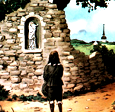
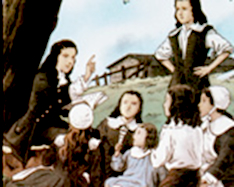
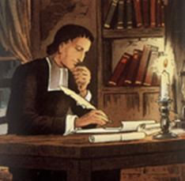
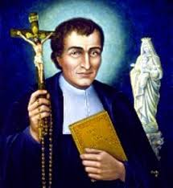
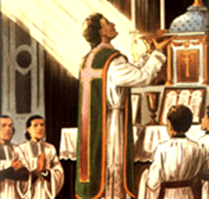

SUA HISTÓRIA
Louis Marie Grignion, era filho
de Jean Baptiste Grignion de Bachelleraie e de Jeanne Visuelle de Chesnais, um casal muito
católico, de tradicional família 
No Batismo recebeu o nome de Louis, e na crisma foi acrescentado o nome Marie, por desejo da sua mãe. Mais tarde, o nome de família também passou a ser omitido, sendo substituídos, de Bachelleraie e de Chesnais, por Montfort, nome do lugarejo onde ele nasceu e foi batizado. Do matrimônio abençoado dos seus pais, além de Louis Marie (Luís Maria) o casal teve mais 17 filhos, dos quais um se ordenou sacerdote e entrou na Ordem de São Domingos (dos Padres Pregadores), e uma das filhas, Guyonne Jeanne (conhecida por Luísa) seguiu a vida religiosa, recebendo o hábito de São Bento, tornando-se Irmã do Santíssimo Sacramento. Ela era muito piedosa e morreu em odor de santidade.
Luís Maria, a exemplo do seu patrono, São Luiz Gonzaga, desde a infância cultivou uma amorosa amizade com a MÃE DE DEUS, e experimentou provas de carinho, amor e proteção especial da VIRGEM MARIA, a quem habitualmente denominava “minha Boa Mãe”.
Esta devoção precoce, desde o início teve uma característica que evoluiu pela sua própria maneira de viver, e a desenvolveu interessadamente ao longo da sua existência: ele se abandonava completamente à nossa MÃE SANTÍSSIMA, com total e absoluta confiança na carinhosa e maternal proteção de NOSSA SENHORA, que nunca lhe faltou. Em todos os momentos que necessitava recorria a sua “Mãezinha Querida”, e pedia tudo o que desejava. E assim, como é natural, Luís se inflamava de satisfação, experimentando imensa alegria, em todas as vezes que ouvia falar, ou que ele mesmo tinha a oportunidade de se manifestar, dizendo algo sobre a SANTÍSSIMA MÃE DO SENHOR.
Ele não procurava os divertimentos que normalmente são praticados na idade infantil. Seu único divertimento era a pintura, para a qual tinha ótimas disposições. Sozinho e sem mestre, aprendeu a desenhar em miniatura. Sua habilidade era tão grande que lhe bastava ver para reproduzir maravilhosamente uma imagem.
Tinha o gênio muito retraído, e embora de pouca idade, em todas as oportunidades, preferia ficar rezando AVE MARIA, olhando o céu e permanecendo em locais tranquilos, assim como também, tinha uma especial predileção de permanecer em orações diante do Sacrário na Igreja, onde JESUS Sacramentado está presente, ou diante de uma imagem de NOSSA SENHORA.
Sempre se portou como um menino extremamente obediente, mostrando um grande respeito aos seus pais e aos professores no Colégio, vendo neles a imagem carinhosa do próprio DEUS, que lhe ensinava e orientava os seus passos na vida. Luís estava sempre unido a sua família, muito embora, o seu pai tivesse um gênio extremamente forte e violento, tratando a numerosa família com bastante austeridade.

Também no Colégio em Rennes, conheceu e travou amizade com o sacerdote Abade Julien Bellier, que nas oportunidades, lhe descreveu a sua vida de Padre Missionário itinerante, realçando muitos acontecimentos interessantes e as dificuldades em ajudar e auxiliar as classes menos favorecidas.
Este sadio relacionamento despertou no jovem Luís o desejo de ser sacerdote. E neste sentido, concluído o curso básico, iniciou os estudos de filosofia e teologia, ainda em São Thomas. Sendo estudante aplicado e de gênio aberto ao bom relacionamento, consolidou excelentes amizades com colegas de curso e outros sacerdotes, recebendo sob a orientação deles, um concreto e profundo conhecimento sobre NOSSA SENHORA, fazendo crescer ainda mais a sua especial devoção a MÃE DE DEUS.
Nos bons relacionamentos que granjeou, no final de 1693, com 20 anos de idade, lhe foi dada a oportunidade através de um benfeitor, de ir a Paris estudar no conhecido e famoso Seminário de São Sulpício. Mas logo que chegou viu que o seu benfeitor não havia fornecido o dinheiro suficiente para custear os estudos. As despesas eram muito mais elevadas. Passou sérias dificuldades e foi viver entre os mais pobres. E depois de muito trabalho e intensa busca, conseguiu frequentar a Universidade da Sorbonne.
Entretanto, o esforço desprendido foi muito grande e a alimentação era deficiente. Resultou que com dois anos em Paris ficou seriamente doente, sendo inclusive hospitalizado. Mas, para a sua felicidade e alegria dos amigos que granjeou, foi curado por um especial favor Divino, com certeza, pelas mãos da VIRGEM MARIA, que o consolou e sarou de todos os males.
Quando recebeu alta no Hospital, foi aconselhado pelas pessoas amigas, que procurasse emprego no Seminário de São Sulpício, por que eles estavam necessitando de alguém com certa instrução. E lá conseguiu ingressar em Julho de 1695 como bibliotecário. Luís era um rapaz inteligente, estudioso e muito organizado.
São Sulpício tinha sido fundado pelo sacerdote Jean Jacques Ollier (1641), um reverendo de grande cultura, que transformou o Colégio fundado por ele num ponto de grande atração, primordialmente para aqueles que desejavam evoluir e crescer nos conhecimentos da religião, e por isso mesmo, o Colégio passou a ser conhecido como “Escola Francesa de Espiritualidade”.
Sendo nomeado bibliotecário, deu-lhe a excelente oportunidade de ler e estudar todas as obras sobre espiritualidade que existia, e em particular, leu e estudou carinhosamente tudo o que havia sobre a VIRGEM MARIA, realçando o precioso lugar da MÃE DE DEUS na vida cristã. E leu também sobre o Santo Rosário, o que lhe permitiu desenvolver os seus conhecimentos e posteriormente escrever um magnífico livro sobre o Rosário.
Em São Sulpício ele
completou os seus estudos e foi ordenado sacerdote no dia 5 de Junho de 1700
e conseguiu um local para trabalhar em Nantes, como 
Foi assim que pensou em se tornar um eremita. Inclusive, chegou a se associar aos eremitas do monte Valeriano. E sua presença junto deles, dos eremitas, mesmo por pouco tempo, o seu exemplo e espírito de penitência trouxe-lhes tantos benefícios, que colaborou eficazmente para restabelecer a ordem e a disciplina naquela comunidade. Mas logo abandonou a idéia e lembrou-se de uma antiga vontade “de pregar missões aos pobres”.
Cinco meses depois da sua ordenação sacerdotal, na cidade de Nantes, ele escreveu: “Nas minhas orações, estou perguntando continuamente para que me tornei sacerdote? Os bons Padres tem o dever e a obrigação de pregar homilias e fazer retiros no âmbito da Igreja, sobretudo, de ensinar e divulgar a preciosa e eficaz proteção da SANTÍSSIMA VIRGEM MARIA”.
E foi assim pensando, que começou a imaginar e projetou fundar a “Companhia de MARIA”, uma Congregação de Sacerdotes dedicados ao estudo e divulgação da Obra da VIRGEM MARIA a serviço da Igreja e da união dos fiéis a JESUS. Mas, antes de colocar este projeto em prática, surgiu um outro chamado.
A oportunidade apareceu quando foi nomeado Padre Capelão do Hospital na cidade de Poitiers. Isto porque, lá ele conheceu Marie Louise Trichet, moça competente e religiosa dedicada, repleta de ideais cristãs. Ela pediu ao Padre a sua admissão ao Hospital, e como não existia posto de Governanta, permaneceu na qualidade de voluntária, ou seja, simples colaboradora, prestando assistência a todos os enfermos. Essa reunião foi um notável acontecimento, por que tornou possível um admirável e eficiente serviço de proteção aos pobres que se estendeu por trinta e quatro anos.
Mas a inveja que tinham dele e dos seus dons, se transformou em ofensas, em calúnias e por incrível que possa parecer, até em diabólicas tramas... Ele não suportando aquele ambiente abominável, se afastou silenciosamente. Marie Louise continuou trabalhando no Hospital, mesmo no sacrifício.
Por outro lado, desde os primeiros momentos da sua vida sacerdotal Montfort sentiu-se chamado para ser missionário. A este apostolado ele se dedicou de corpo e alma. Em muitas dioceses e inúmeras paróquias da França, ele fez ouvir a sua voz de apóstolo e de instrumento extraordinário a serviço da MÃE DE DEUS, propiciando concretamente a conversão de muitas almas. Sua palavra ardente e arrebatadora era sempre acompanhada pelo seu exemplo de cristão zelador da doutrina Divina. E por isso mesmo, não lhe faltaram, a bênção de DEUS e a bem visível assistência do DIVINO ESPÍRITO SANTO, além da proteção e do evidente auxilio de NOSSA SENHORA, nossa MÃE SANTÍSSIMA.
As missões por ele orientadas e pregadas, sempre terminavam em verdadeiros triunfos de piedade e em muitas e muitas conversões. Com certeza, o inferno permanecia fechado e não via com bons olhos os grandiosos efeitos das operações missionárias do incansável e Santo missionário.
Referindo-se as maquinações diabólicas, ele mesmo, bendizendo-as em uma das suas cartas atestou: “Jamais fui como hoje: pobre, humilde e atribulado, homens e demônios movem contra mim uma guerra sumamente amável. Zombam de mim, caluniam-me, vejo eu, a minha própria fama em farrapos, e minha pessoa na prisão! Oh! Que dons preciosos!”
Luís de Montfort levava uma
pesada cruz! Houve ocasiões em que ele mesmo chegou a imaginar que deveria abandonar,
nem que 
Todavia, na continuidade dos meses, sendo reclamada a sua presença no hospital de Poitiers, cristãmente e com espírito aberto e tranquilo, esquecendo as mágoas passadas, retornou ao seu posto na vida de caridade e de sacrifício.
No entanto, o maligno continuava ferozmente a rugir de ódio e sua sanha se reacendeu decidida com a presença do Santo. Belzebu vomitou sobre o homem de DEUS tamanha onda de procelas e perseguições que quase conseguiu abatê-lo.
Com poucos meses de trabalho dedicado e amoroso, novamente atraiu a indesejável e constante interferência do Bispo de Poitiers. E assim, frustrado com a constante interferência do Superior Eclesiástico, Luís decidiu fazer uma peregrinação a Roma. Para se encontrar e pedir conselho ao Papa Clemente XI. Pois, ele estava em dúvida sobre qual caminho devia seguir. Até estava pensando em conseguir a licença Pontifícia para se dirigir as terras dos infiéis. O Papa recomendou que voltasse a França e realizasse o trabalho que ele sentisse maior disposição em executar. E mais, que combatesse a “peste jansenista”, honrando-o com o título de “Missionário Apostólico”.
Com toda evidência, DEUS NOSSO SENHOR o requisitou para aquele cargo, concedendo-lhe dons admiráveis que unidos a sua vontade pessoal de bem servir, descortinou um horizonte maravilhoso para sua existência. Inaugurou em 1705 a sua carreira apostólica num subúrbio de Montfort, que era um Bairro famoso, conhecido como foco de vícios e de maldades. E Padre Montfort atuou de maneira brilhante e inflamada, fazendo com que a Verdade de DEUS alcançasse todos os corações, deixando-os completamente transformados e regenerados. O fulgurante emblema do Santo missionário que o envolvia e destacava a sua pessoa, era a sua singular devoção à VIRGEM MARIA. Era a devoção que fervorosa e insistentemente inculcava aos seus ouvintes, afirmando sempre como dizia São Bernardo de Claraval, que NOSSO SENHOR enviava todas as graças pelas mãos carinhosa da Sua DIVINA MÃE SANTÍSSIMA. Esta devoção de Montfort nunca esmorecia estava sempre vibrante e comunicativa, e explicava a força e a uniformidade do seu apostolado. Sua vida, santificada por tão admirável devoção, abalava as populações num contínuo prodígio, dispondo-as a um acolhimento espontâneo, em face da sua palavra vigorosa e inspirada.
E agora, em 1705, Montfort decidiu realizar a idéia, que há muito tempo vivia em sua alma, de fundar a “Companhia de Sacerdotes, completamente dedicados às missões, e trabalhando sob o estandarte e a proteção de MARIA SANTÍSSIMA”. E então, fundou a “Companhia de MARIA” e para ela, compôs uma Regra conforme a sua finalidade. Os missionários pertencentes a esta Companhia, seriam os herdeiros do seu entranhado amor a NOSSA SENHORA. A missão primordial deles seria fazer MARIA ser conhecida e amada por todas as pessoas que lhes fossem confiadas. A Companhia fundada por Montfort teve um incremento admirável e hoje, conta com milhares de religiosos professos em muitos países. Desde 1966 se acha estabelecida também no Brasil.
Também a “Congregação das FILHAS DA SABEDORIA”
, que ele fundou, e teve grande desenvolvimento na França,
com ótimos resultados, e também exerceu o 
Seguindo com as Missões, Padre Luís escolheu a cidade de Nantes como seu quartel general e de lá pregou incansavelmente em toda Bretanha. Sua reputação como grande missionário cresceu a tal nível, que se tornou conhecido como o “Bom Pai Montfort”. E foi pregando e entusiasmando o povo, que em Pontchateau, conseguiu atrair milhares de pessoas para ajudá-lo na construção de um Calvário. Todavia, este acontecimento se constituiu causa de uma das maiores decepções que sentiu em sua vida. Na véspera do lançamento da pedra fundamental do monumento, quando ele inclusive já havia programado a benção do mesmo, o Bispo local depois de ouvi-lo, proibiu a benção e a construção, por ordem do Rei da França, Luís XIV, denominado “Rei-Sol” , homem extremamente vaidoso e mandão. Os Jansenistas (protestantes), conhecendo as vaidades do Rei, teceram uma intriga e envenenaram o acontecimento, fazendo o Rei acreditar que o fato da edificação daquela obra, podia se constituir numa permanente maldição para o reino francês. E o Rei acreditou e proibiu a construção do Calvário!
Quando Padre Luís recebeu a notícia, ficou impressionado, mas não perdeu a tranquilidade. Junto das centenas de pessoas que aguardavam a benção do local, humildemente disse poucas palavras: “Tinhamos a esperança de construir aqui um Calvário, em homenagem a JESUS! Tudo bem, vamos construí-lo firme e forte, no interior do nosso coração. Bendito seja DEUS”.
Deixou a cidade de Nantes e estendeu vigorosamente a sua pregação missionária a diversas regiões. Oportunidade em que também encontrou tempo para escrever o “Tratado da Verdadeira Devoção à SANTÍSSIMA VIRGEM MARIA”, e também escreveu “O Segredo de MARIA”,“O Segredo do Rosário”,“As Regras para a Companhia de MARIA” e também “As Regras para as Filhas da Sabedoria”, assim como, escreveu muitos hinos religiosos. Sua missão teve um grande impacto, especialmente em Vendée (Vandéia), departamento francês localizado na região do Loire, onde se encontra a Baia de Biscaia.
Algumas pessoas sem religião, junto com gente de outras confissões, estranharam a sua maneira incisiva, forte e amorosa, de fazer as pregações, e se revoltaram contra aquele estilo de pregar os ensinamentos de JESUS, o amor a VIRGEM MARIA e as doutrinas cristãs. Então lhe prepararam um ardil, envenenando a sua refeição. Apesar de não ter sido fatal, sua saúde se deteriorou, tendo sido atendido em Hospitais e Casas de Saúde da região. Mas ele não desanimou, continuou pregando livremente nas Escolas para meninos e meninas pobres.
Acontece que os “bons ventos” também sopraram na direção dele. O Bispo de La Rochele, uma cidade que foi um importante porto marítimo no período colonial francês, localizada no Departamento de Charente-Maritime, desde algum tempo se impressionara com as atividades e a fibra incansável de Luís, e por essa razão, convidou-o a abrir uma Escola em La Rochele. O Padre entusiasmado com a oportunidade, buscou a preciosa ajuda da sua seguidora Marie Louise Trichet, que por sua vez, trouxe também a sua nova companheira de trabalho e seguidora, Catherine Brunet, e juntas, fizeram os preparativos e entraram em ação, alistando diversas pessoas para a Escola. E assim, no princípio do ano de 1715 abriram a Escola que em pouco tempo, alcançou o número de 400 alunos.